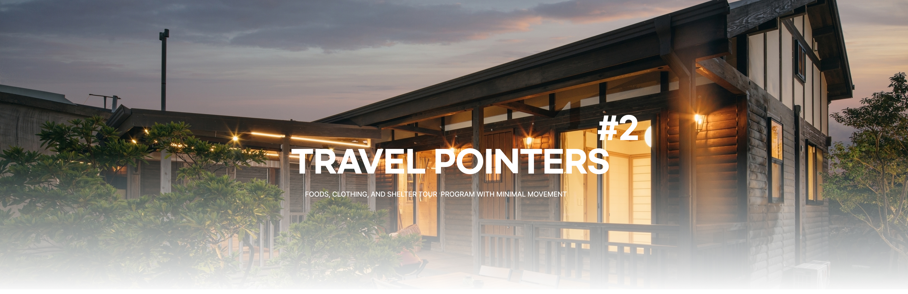
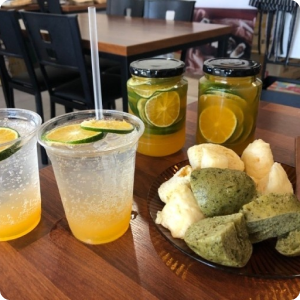
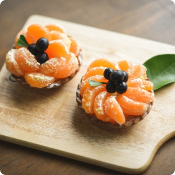
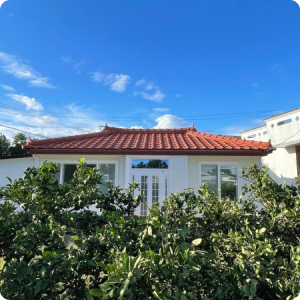
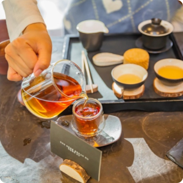
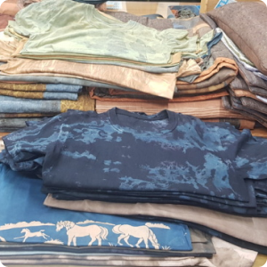
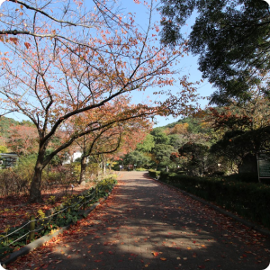
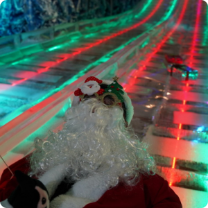
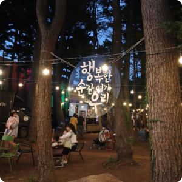

|  |
Jeju Haryejumbbang
You can experience making Jeju Sangwebbang (bread made by adding rice wine to flour and fermenting),
and you can purchase Sangwebbang and drinks (handmade syrup).
Homepage : https://www.instagram.com/harye_bbang/ Address : 272, Harye-ro, Namwon-eup, Seogwipo-si, Jeju-do Tel : 064-767-4545 |
|
2.4km
|
|
|  |
Hahyo salon Cooperative
You can enjoy making food using Jeju's specialties at the Hahyo Salon.
Food making program include tangerine scent tart, omegi rice cake tangerine,
and green tangerine syrup making experience. And you can make tangerine scented candle.
(Currently, the farmhouse restaurant is not open.)
Homepage : http://www.xn--xz2bx61c22a.com/bbs/board.php?bo_table=yp_product03&wr_id=1 Address : 217-8, Hyodonsunhwan-ro, Seogwipo-si, Jeju-do Tel : 0507-1485-8183 |
|
401m
|
|

|
Soesokkak Estuary
Let's take a picture while looking at the sea of Sogok Beach in Seogwipo, Jeju Island.
Soesokak is a river that ends in contact with the sea, and the unique topography of Soesokak Bay is beautiful.
The beach, which faces deep water, strange rocks, and dense pine forests, welcomes us.
And you can ride the Jeju traditional boat 'Teu'.
Homepage : - Address : 104, Soesokkak-ro, Seogwipo-si, Jeju-do Tel : 064-732-9998 |
|
15km
|
|
|  |
Dosoon House
It is an accommodation facility that renovated the old building of Jeju Island,
the stone wall and the cute old building of this house are great resting place
for the first traditional trip.
Homepage : - https://www.instagram.com/dosoon_jeju Address : 69, Dosunnam-ro, Seogwipo-si, Jeju-do Tel : 0507-1479-0241 |
|
36km
|
|
|  |
Jeju Tea museum(Oseolok)
Oseolok Tea Museum, which borders the Seogwang Tea Field in Jeju, is the first tea museum
in Korea opened in September 2001 by ‘AmorePacific’ to introduce and promote Korean traditional tea.
Homepage : hwww.osulloc.com/kr Address : 15, Sinhwayeoksa-ro, Andeok-myeon, Seogwipo-si, Jeju-do Tel : 064-794-5312 |
|
30Km
|
|
|  |
Gammaeul
It is a place that sells Jeju traditional clothes called 'gal-clothes'.
Why don't you buy one while traveling to Jeju Island? It's easy to move because it's the same
building with the parking lot.
Homepage : - Address : 23, Sumogwon-gil, Jeju-si, Jeju-do Tel : 064-711-1766 |
|
372m
|
|
|  |
Jeju Halla Arboretum
It is an arboretum built for collection, proliferation, preservation, management, exhibition,
and resource conversion of Jeju's native plant genetic resources. You can see many native plants
of Jeju Island, and there is a natural ecological learning center, making it a good tourist
destination for families to come.
Homepage : http://sumokwon.jeju.go.kr Address : 72, Sumogwon-gil, Jeju-si, Jeju-do Tel : 064-710-7575 |
|
400m
|
|
|  |
Jeju Halla Arboretum Theme Park
This place is to convey the warm beauty of the cold ice in the arboretum theme park.
Through 365 days of experience of touching, feeling, and interacting with ice sculptures full
of dreams and emotions, we provide infinite emotions of the ice country that we did not know.
Homepage : http://www.sumokwonpark.com/ Address : 69, Eunsu-gil, Jeju-si, Jeju-do Tel : 064-742-3700 |
|
0m
|
|
|  |
Jeju Halla Arboretum Night Market
After enjoying the trip at the arboretum theme park, a night market opens on the street at night.
Why don't you finish this trip with a variety of food and walking along the trail
at the night market on Jeju Island and having a sincere conversation?
Homepage : http://www.sumokwonpark.com/ Address : 69, Eunsu-gil, Jeju-si, Jeju-do Tel : - |